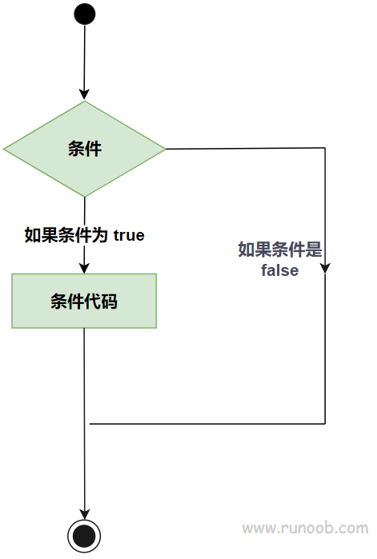
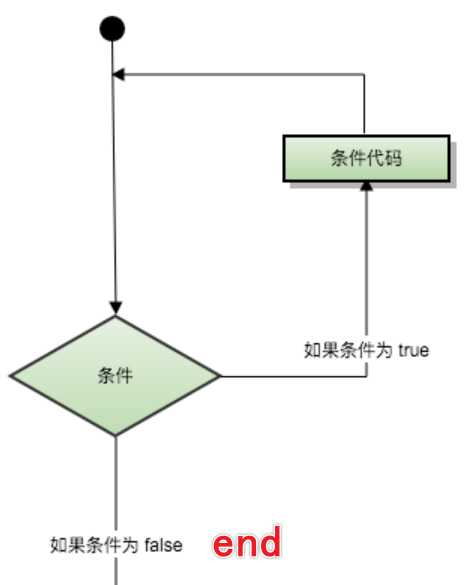

判断

| 语句 | 描述 |
|---|---|
| if 语句 | 一个 if 语句 由一个布尔表达式后跟一个或多个语句组成。 |
| if...else 语句 | 一个 if 语句 后可跟一个可选的 else 语句 ，else 语句在布尔表达式为假时执行。 |
| 嵌套 if 语句 | 您可以在一个 if 或 else if 语句内使用另一个 if 或 else if 语句。 |
| switch 语句 | 一个 switch 语句允许测试一个变量等于多个值时的情况。 |
| 嵌套 switch 语句 | 您可以在一个 switch 语句内使用另一个 switch 语句。 |
【注】上一节的三目运算符 ?: 其实也属于判断。
顺序结构
按照编码顺序执行。
选择结构
switch case 注意
break;switch(表达式) { case 常量表达式 1:语句 1; break; case 常量表达式 2:语句 2; ... default:语句 n + 1; } // 没有 break 的话就会顺序执行接下来的 case // case 的语句最好 {} 起来比较清晰，如下： switch(表达式) { case 常量表达式 1: { 语句 1; } break; case 常量表达式 2: { 语句 2; } ... default: { 语句 n + 1; } }default 默认执行。
循环

| 循环类型 | 描述 |
|---|---|
| while 循环 | 当给定条件为真时，重复语句或语句组。它会在执行循环主体之前测试条件。 |
| for 循环 | 多次执行一个语句序列，简化管理循环变量的代码。 for(索引初始化; 判断条件; 改变条件) {} |
| do...while 循环 | 除了它是在循环主体结尾测试条件外，其他与 while 语句类似。 【先执行一次再判断条件，即至少执行一次】 |
| 嵌套循环 | 您可以在 while、for 或 do..while 循环内使用一个或多个循环。 |
size_tfor( ; ; ) {}等价于while (true) {}
控制语句
| 控制语句 | 描述 |
|---|---|
| break 语句 | 终止循环或 switch 语句，程序流将继续执行紧接着循环或 switch 的下一条语句。 |
| continue 语句 | 告诉一个循环体立刻停止本次循环迭代，重新开始下次循环迭代。【结束本次，继续下次】 |
| goto 语句 | 将控制转移到被标记的语句。但是不建议在程序中使用 goto 语句。 |
flag:
goto flag;
------------------------------------
#include <stdio.h>
int main() {
zhaocai1:
printf("去找 zhaocai 1 号。\r\n");
goto zhaocai1; // 向前跳转
// 向后跳转
goto zhaocai;
printf("去找 zhaocai\r\n");
printf("去找 zhaocai\r\n");
printf("去找 zhaocai\r\n");
zhaocai:
printf("没有找到招财 zhaocai\r\n");
return 0;
}
练习
循环打印 0 - 100（分别使用 while/dowhile/for/goto 实现）
#include <stdio.h> #include <stdlib.h> int main() { for (int i = 0; i <= 100; i++) { printf("%d\r\n", i); } system("pause"); return 0; }输入三个数，打印最小的那个数
#include <stdio.h> #include <stdlib.h> int main() { printf("请输入 3 个数，用空格间隔：\r\n"); int ret = 0; int i, j, k; scanf("%d %d %d", &i, &j, &k); if (i > j) { ret = i; }else { ret = j; } printf("最大的数是：%d \r\n", ((ret > k) ? ret : k)); system("pause"); return 0; }输入小写字母，转换成大写字母输出
#include <stdio.h> #include <stdlib.h> int main() { char a; printf("请输入一个小写字母："); scanf("%c", &a); //a += 32; a -= 32; printf("对应的大写字母是：%c \r\n",a); system("pause"); return 0; }输入一个字符，判断字符是大写还是小写
#include <stdio.h> #include <stdlib.h> int main() { char a; printf("请输入一个字母："); scanf("%c", &a); if (a >= 'a' && a <= 'z') { printf("该字母是小写字母。\r\n"); } else if (a >= 'A' && a <= 'Z') { printf("该字母是大写字母。\r\n"); } system("pause"); return 0; }输入一个数，判断这个数是否为偶数
#include <stdio.h> #include <stdlib.h> int main() { int a; printf("请输入一个数字："); scanf("%d", &a); if (a % 2 == 0) { printf("%d 是偶数。\r\n", a); } else { printf("%d 是奇数。\r\n", a); } system("pause"); return 0; }使用 if 语句与 switch 语句分别实现一个具有加减乘除功能的计算器（略）
计算 0 - 100 的加法(0 + 1 + 2 + 3 + 4 + 5 + 6 + 7 + 8 + 9 ...)
#include <stdio.h> #include <stdlib.h> int main() { int ret = 0, i = 100; while (i > 0) { ret += i; i--; } printf("0 ~ 100 的和是：%d\r\n", ret); system("pause"); return 0; }打印乘法口诀
例如：
1 * 1 = 1
2 * 1 = 2 2* 2 = 4#include <stdio.h> #include <stdlib.h> int main() { int i = 1; int j = 1; for (i = 1; i < 10; i++) { for (j = 1; j <= i; j++) { printf("%d * %d = %2d \t", j, i, (i * j)); } printf("\n"); } system("pause"); return 0; }上网查询如何生成随机数，实现一个生成 10 以内随机数，并且猜数字的游戏
- 打印一个菱形（略）
*
***
*****
*******
*****
***
* - 使用*打印一个三角形（略）
*
***
*****
*******
*********